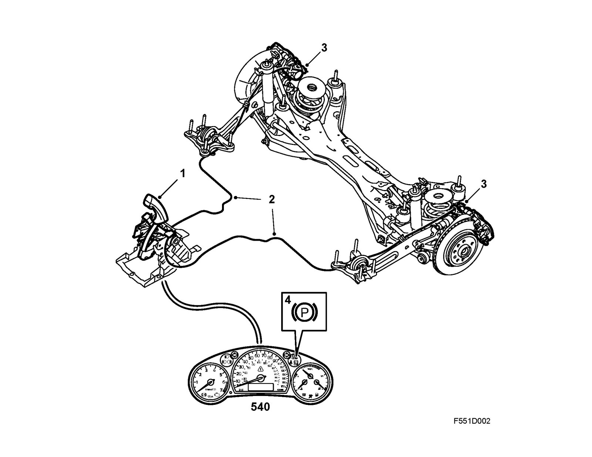
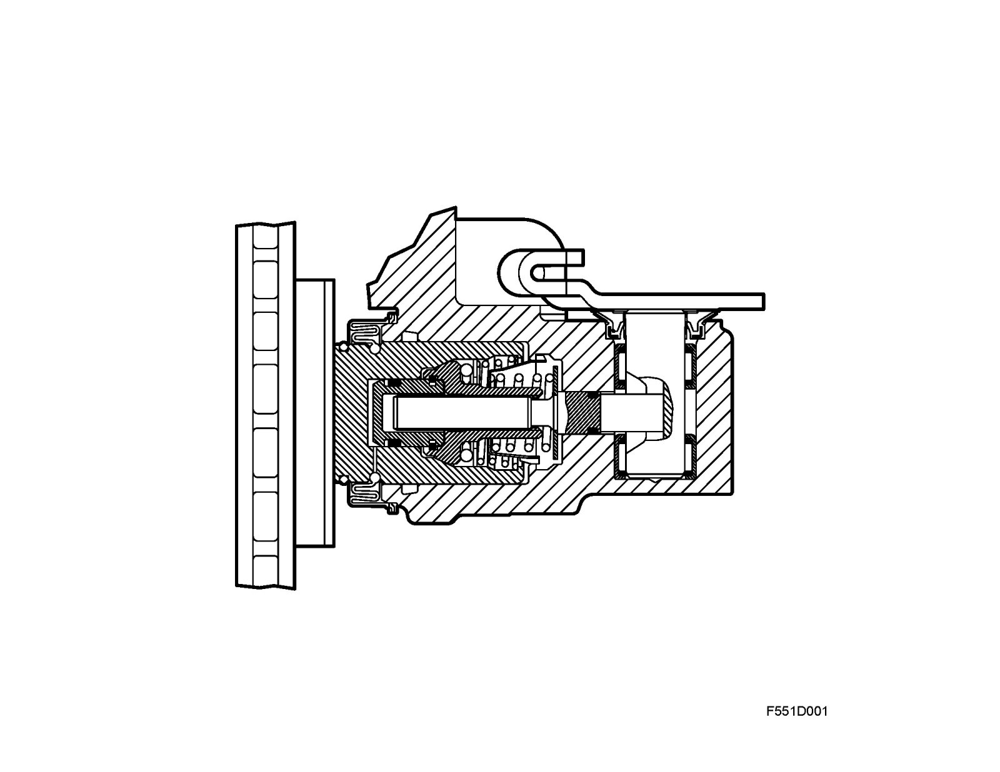

Parking Brake System: Description and Operation
HandbrakeSystem overview

1 Handbrake lever
2 Cables
3 Actuating levers
4 Warning lamp
The Handbrake is operated by a lever (1) and acts mechanically on the rear wheels.
When the Handbrake lever is pulled upwards, the force is applied via two cables (2) to actuating levers (3) on the rear brake caliper. The levers press out the brake pistons in the caliper and press the brake pads against the brake discs so that braking occurs.
When the Handbrake is applied, a warning lamp (4) lights in the main instrument display panel.
